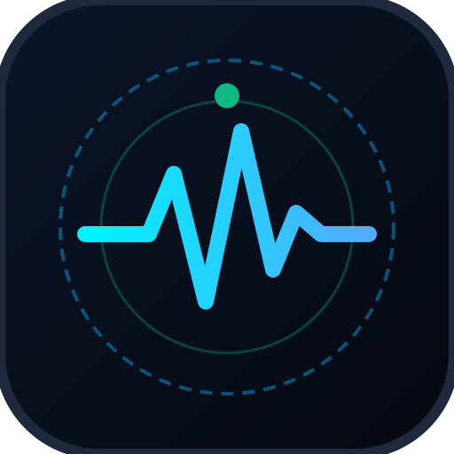

Home Triage Tricorder
PWA + Native Bridge v1
Multi-Sensor Smartphone Physical Exam & Dynamic Clinical Triage
🎨 Customize UI
Live Hardware Sensors
🏠 Home & Baseline
⚡ 60s Checkup Scan
🩺 Symptom Triage
🧰 Doctor's Black Bag
📱 History & Native Bridge